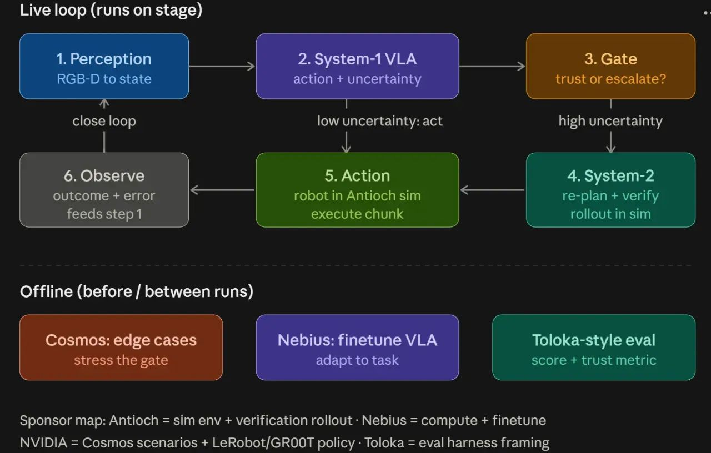

🏆 Top Winner · 1st Place · Physical AI Hackathon
Physical AI · Robotics · VLA
Fast Loop: End-to-End Self-Improving Robotics
Can robots teach themselves to improve — recursively? Fast Loop answers yes. We built a complete self-improving training loop where a System-1 VLA acts, a Gate escalates high-uncertainty moves to a System-2 planner for re-verification in simulation, and outcomes feed back to improve the policy. Achieved 83% held-out success vs 38% baseline (+46 pts) at the Physical AI Hackathon hosted by NVIDIA × Nebius × Antioch × Toloka.
🏆 1st
Physical AI Hackathon · Top Winner
System-1/2
Dual-system gate architecture
SmolVLASystem-1 / System-2LoRA
Antioch SimNebius GPUCosmos (NVIDIA)
Toloka EvalGR00TLeRobot
Results
Held-out success
83% +46 pts
Fast Loop · Cup stacking & Cube grasping
Baseline
38%
Without self-improvement loop
Architecture
Fast Loop runs two loops in parallel — a Live Loop that executes on the robot in real-time, and an Offline Loop that continuously improves the VLA policy between runs.

━━━━━━━━━━━━━━━━━━ LIVE LOOP (runs on stage) ━━━━━━━━━━━━━━━━━━
1. Perception RGB-D → state estimate
│
▼
2. System-1 VLA action + uncertainty estimate
│
├──── low uncertainty ────▶ 5. Action
│ (robot + Antioch sim, execute chunk)
▼ │
3. Gate trust or escalate? │
│ │
▼ high uncertainty ▼
4. System-2 re-plan + verify 6. Observe
└───────────── rollout in sim ──▶ outcome + error
│
─────────▶ close loop (back to 1)
━━━━━━━━━━━━━━━━━━ OFFLINE (before / between runs) ━━━━━━━━━━━━
Cosmos (NVIDIA) Nebius GPU Toloka-style eval
edge case generation · finetune VLA (LoRA) · score + trust metric
stress the gate adapt to task eval harness
━━━━━━━━━━━━━━━━━━ SPONSOR MAP ━━━━━━━━━━━━━━━━━━━━━━━━━━━━━━━━
Antioch = sim env + verification rollout
Nebius = compute + finetune
NVIDIA = Cosmos scenarios + LeRobot / GR00T policy
Toloka = eval harness framing
Tasks Demonstrated
| Task | Preflight | Held-out Success | Baseline |
|---|
| Cup stacking | 9/13 | 83% | 38% |
| Cube grasping | 10/10 | 83% | 38% |
Video Demo
▶
Fast Loop · Full Demo Video
Robot self-improving across iterations — System-1/2 gate, Antioch sim, LoRA fine-tuning live
Technology Stack
| Component | Technology | Role |
|---|
| VLA Backbone | SmolVLA / GR00T (LeRobot) | System-1 real-time policy |
| Fine-tuning | LoRA on Nebius GPU | Offline policy adaptation |
| Simulation | Antioch 3D | Verification rollout + scene editing |
| Edge cases | NVIDIA Cosmos | Stress the gate with synthetic scenarios |
| Evaluation | Toloka-style harness | Score + trust metric per episode |
| Hardware | SO-101 Robot Arm | Physical deployment |
Sponsors
Repository Branches
main
Core loop orchestration & entry point
fast-loop-frontend
Web dashboard for monitoring iterations
AntiochSim
3D sim environment & scene editor
opus-motion-planner
System-2 motion planning & re-planner
so101-vla-physical-integration
SO-101 hardware bridge + VLA integration